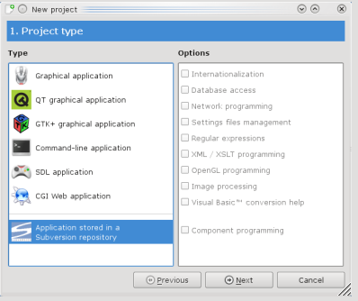
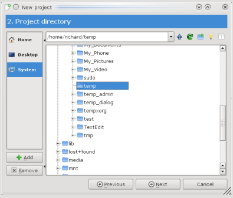
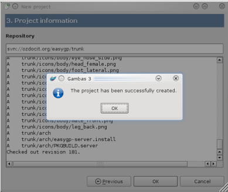

Downloading EasyGP
Currently EasyGP is only available via SVN. The repository is at
svn://ozdocit.org/easygp/trunk

Fire up gambas3
Select new project
Select the option of downloading from an svn repository
Click the Next button

Select the directory you wish to store the code in
Click the Next button on the project creation wizard to continue.

Copy and paste or type in the svn address and hit return
Watch gambas create the project
Be patient as download from the internet can take some time.